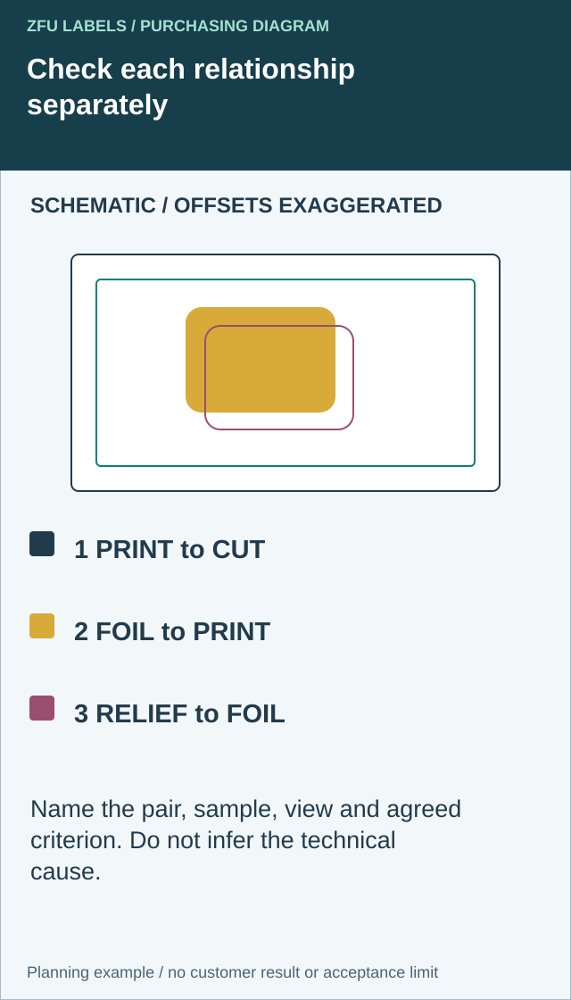

When a foil-and-embossed crest looks off-centre, identify the relationship that changed. Compare print with cut, foil with print and relief with foil separately before deciding which file or production stage needs review.
Keep a layer-to-tooling register before accepting a decoration quote or reorder. It makes shared tooling, change charges and approval evidence discussable without assuming that all decorative layers change together. This guide does not confirm any site's tooling inventory or finishing capability.

Name the feature pair before writing misaligned
Keep one identified flat label available alongside the applied bottle. A curved viewing surface and lighting can make the relief difficult to read, while an unapplied sample can help describe its relationship to print and decoration. Neither view automatically replaces the other; record what each observation represents.


Start with explicit pairs. The printed border can differ relative to the cut. The foil crest can differ relative to printed content. The embossed feature can differ relative to the foil crest. The whole applied label can also differ relative to the bottle, which belongs to the application inspection rather than automatically to a print-file correction.
Pantec's file-preparation guide calls for separate functional layers and attention to positioning references for decorated tooling. It is a reason to keep the pairs identifiable, not a registration tolerance for this order. Ask the converter which reference and measurement or visual comparison are appropriate.
| Pair in the same sample | Record the actual relationship | Avoid this unsupported conclusion |
|---|---|---|
| Print to cut | Named printed feature and physical cut reference | Every visible shift came from the applicator |
| Foil to print | Named foil feature and matching printed feature | All decoration layers moved together |
| Relief to foil | Corresponding relief and metallic feature | A brighter highlight proves a positional error |
| Applied label to bottle | Agreed bottle datum and presentation | A correctly cut label guarantees correct placement |
Record sample identity, artwork/layer revisions, viewing arrangement and the agreed criterion. If there is no suitable reference or the feature cannot be read confidently, preserve that uncertainty. Do not choose a tolerance after seeing the disputed sample or derive a millimetre error from a perspective photograph.
For a hypothetical review, print and foil might retain their intended relationship while relief appears displaced relative to the crest. That observation defines the next question for the decoration team; it does not establish the technical cause. Moving the whole printed artwork could disturb an already accepted print-to-cut relationship.
Ask the responsible converter to explain the affected pair, proposed correction and sample evidence. Where a file or tool changes, follow that change through the layer-to-tool register below. Review the resulting complete sample rather than approve a corrected layer in isolation.
This method helps make the complaint actionable without diagnosing equipment. Keep material/relief damage and wet-service observations separate; positional agreement alone establishes neither durability nor a supported tactile effect.
AI-generated packaging planning example retained from this article. Fictional brands, equipment and print details; not a customer job, facility record, legal artwork or measured proof.
Give each decorated layer an identity
Ask for a review view that shows print, foil, emboss/deboss and cut geometry separately as well as together. A flattened attractive PDF may hide which words require physical tooling.
| Register field | What the buyer and converter should resolve |
|---|---|
| Layer and feature | Name the crest, vintage, border or other controlled area |
| File revision | Identify the exact separated artwork used to prepare it |
| Process and material | Confirm actual decoration process and proposed stock/finish |
| Tool reference | Identify any existing or proposed tool; do not infer compatibility from a photo |
| Shared use | List SKUs or vintages the converter confirms it can serve |
| Commercial responsibility | Agree preparation charges, ownership, storage and later access where relevant |
| Change impact | Identify which files, tools and sample approvals must be reviewed |
This register is an editorial procurement aid, not a tooling engineering specification. Minimum detail, registration and acceptable relief remain questions for the actual converter and construction.
Follow a change through every affected layer
Suppose a hypothetical range shares an embossed crest but prints the vintage as ordinary ink. A vintage-only copy change may leave the crest artwork unchanged. The converter must still confirm the actual geometry and tool reference before reuse; the buyer should not authorize a new embossing tool merely because the sales sheet names a new vintage.
If the vintage is part of the foil layer, a new date can affect that layer and its tooling. Moving the crest can affect registration even if its shape stays the same. Changing textured stock can alter the relevant sample evidence without changing a single word. Record those differences before comparing a reorder price with the previous invoice.
Keep any reusable master and SKU-specific feature separately identifiable in the design workflow if the converter supports that arrangement. Do not assume separate files automatically allow separate physical tools. Ask which arrangement is practical, what it costs and what sample will represent it.
Specify the effect as well as the process name
KURZ's transparent hot-stamping examples demonstrate that hot-stamped effects include more than one opaque metallic appearance. This is a manufacturer-specific illustration, not confirmation that a particular process is available here. Identify the required visual reference and the exact proposed effect instead of treating every word called foil as an interchangeable gold surface.
For the appearance tradeoff, see foil versus metallic ink. For wet-use observations, use the wine ice-bucket inspection record. Neither a tooling register nor a decorative mockup establishes finished-pack performance.
Short answer
Use embossing for one tactile focal point and hot foil for one controlled light-catching detail. Build both around a readable brand and wine identity, then test the decorated construction on the bottle under bottling, refrigeration and ice-bucket conditions.
The request “make everything gold and embossed” usually arrives with a premium price target. The attraction is understandable. More finishing feels like more value. On a shelf, however, six reflective elements compete until none of them leads.
Give every finish one job
| Element | Best role | Risk when overused |
|---|---|---|
| Embossing | Crest, monogram, name or small pattern | Paper cracking and noisy texture |
| Hot foil | Fine border, vintage, seal or key word | Glare and weak hierarchy |
| Textured paper | Material character and tactile base | Reduced fine-detail print and wet durability |
| Debossing | Quiet depth or framing | Readability loss in small type |
| Varnish | Protection or subtle contrast | Changing the paper feel |
A composite reserve-wine proof
This is a composite planning example. A winery places gold foil on the crest, brand, vintage, varietal, border and award line. Each element looks premium at 300% on screen. At bottle distance, the label becomes one bright rectangle and the brand disappears.
In this hypothetical revision, the designer removes foil from the supporting copy, keep it on the crest and vintage, then emboss only the crest. The revised label uses less decoration and feels more expensive because the eye knows where to stop. This is one of those jobs where taking something away is the production improvement.
Paper and tooling control the effect
Deep texture can soften very fine foil edges. Heavy embossing can crack coated surfaces or distort nearby copy. Large solid foil areas need heat, pressure and dwell control. The converter should review minimum line weights, trapping, relief depth and the sequence of print, foil, emboss and die cutting before final artwork.
A production proof on the real stock is more useful than a digital mockup. Screens simulate metallic color but not reflected light, paper compression or the shadow created by relief.
Ice-bucket and bottling tests
- Apply labels to the exact bottle, including surface treatment and mold seams.
- Test at the real application temperature and bottle moisture level.
- Check foil and emboss registration on curved viewing surfaces.
- Expose filled bottles to refrigeration, condensation and ice water when relevant.
- Inspect edge lift, paper darkening, whitening, scuffing and foil abrasion.
- Run bottles through guides, cases and dividers before approval.
- Retain an approved production standard under normal and angled light.
When flat digital print wins
For a micro-run, many vintages or frequent copy changes, a well-designed digitally printed label can be more convincing than underfunded decoration. Metallic ink or a restrained simulated effect will not duplicate foil, but it may protect timing and allow each SKU to remain current. The premium decision belongs to the whole launch, not one square inch.
For wet-service performance, continue with Wine Label Materials for Ice Buckets.
Send the layers and the proposed change
Resolve the specific label handoff
Include identified flat and applied samples, separated layer files, relevant feature pairs and the agreed reference or unresolved criterion.
Prepare the label specification inquiry. The contact page opens an email draft for review; send files through the listed email or WhatsApp route. Actual supply scope, samples, pricing and timing require project confirmation.
Related decisions: Metallic Label Detail: Review Positive Lines and Reversed Gaps Separately; Custom Die-Cut Labels: Separate the Cut Path from the Brand Border; Pantone vs CMYK Labels: Confirm the Actual Ink Separations